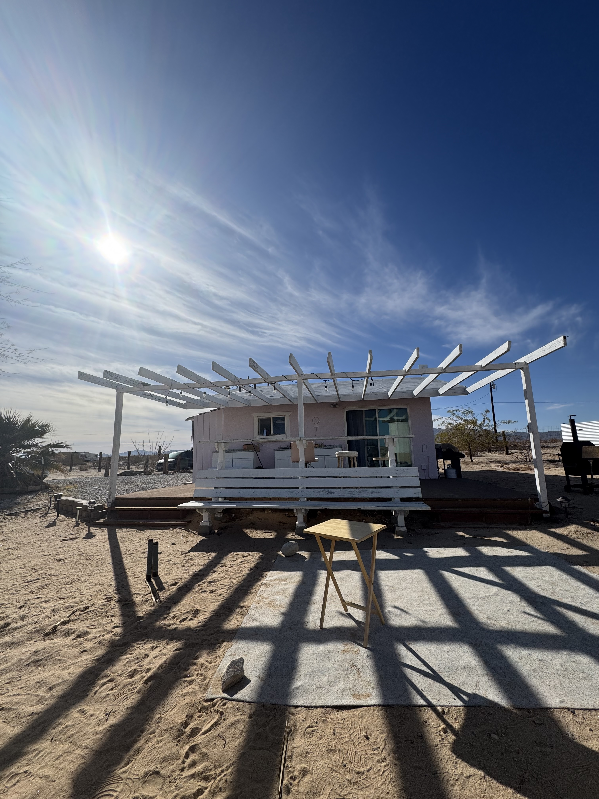

I recently came across an article titled “The Illusion of Urgency,” published in 2022 by Daniel R. Kennedy and Andrea L Porter in the American Journal of Pharmaceutical Education. The publication is focused on time management for academic faculty, and I found the following paragraph to be particularly insightful:
- “One of the many rewarding aspects of an academic career is the numerous, varied responsibilities that create a stimulating job with a daily schedule that is different from one day to the next. Yet, these stimuli and responsibilities, coming from students, faculty, administrators, professional organizations, colleagues, and external stakeholders, can get overwhelming, especially as many of the requests can feel like they require an immediate response. To prosper as an academic, one must be able to identify the truly urgent issues over those that give an illusion of urgency, or else the short-term requests may interfere with the important time-intensive and productivity-driven tasks that the promotion and tenure process is primarily based upon.”
In today’s fast-paced work environment, this statement rings true beyond the circles of academia and into many of our daily lives - being able to manage tasks efficiently is crucial for not just our productivity and success, but also our sanity!
In this week’s blog post, I will highlight the Eisenhower Matrix, a powerful tool for prioritizing tasks based on urgency and importance. Following the principles established in this tool can help us focus on the tasks that truly matter over those that distract us each and every day.

A bit of history
71 years ago, Dwight D. Eisenhower was facing a variety of demands in his presidency, including managing the Cold War, domestic affairs, and other national issues. In spite of (or perhaps, in the face of) the breadth of his committments, Eisenhower developed a reputation for productivity and decision-making skills. In particular, Eisenhower created a new method for task prioritization that later became known as the “Eisenhower Matrix.”
What is the Eisenhower Matrix?
The Eisenhower Matrix is a simple framework that helps individuals and teams classify tasks into four categories, also known as “the 4 D’s”: Do, Decide, Delegate, Delete. These categories are based on two metrics: urgency and importance.
Let’s dive a little deeper into each of our quadrants.
Quadrant 1: Do (Urgent and Important)
Tasks in this category require immediate attention and have significant consequences if not completed. Examples include:
Meeting a critical project deadline
Handling a last-minute client request
Resolving a major issue or crisis
Strategy: Address these tasks immediately to avoid negative consequences.
Quadrant 2: Decide (Important but Not Urgent)
These tasks contribute to long-term success but do not require immediate attention. Examples include:
Strategic planning and goal setting
Professional development and training
Relationship-building and networking
Strategy: Schedule dedicated time to work on these tasks to prevent them from becoming urgent.
Quadrant 3: Delegate (Urgent but Not Important)
Tasks that require immediate attention but do not significantly impact long-term goals belong here. Examples include:
Responding to non-critical emails
Attending unnecessary meetings
Handling minor administrative tasks
Strategy: Delegate these tasks to others whenever possible.
Quadrant 4: Delete (Neither Urgent nor Important)
These tasks provide little to no value and can often be eliminated. Examples include:
Excessive social media browsing
Unnecessary paperwork
Low-priority busywork
Strategy: Minimize or eliminate these tasks to free up time for higher-priority work.
Deciding what is important
While the Eisenhower Matrix is an excellent way to organize the priority of your to-do’s, the challenge still remains to evaluate the importance of each task. Determining what truly matters to you when categorizing tasks involves understanding their impact and their alignment with your long-term goals. Here are some key ways to evaluate importance:
1. Evaluate alignment with long-term aspirations
Ask yourself, “Does this task contribute to my key objectives or long-term success?” A task that directly impacts a project deadline or a business goal is important, while one that has minimal long-term effect is less so.
2. Assess the impact of completion vs. non-completion
Ask yourself, “What happens if this task is not done?” If skipping a task leads to major consequences (missed revenue, regulatory penalties, lost customers, etc.), then it’s important.
3. Consider the value addition
Ask yourself, “Does this task create meaningful value for me, my team, or my organization?” Developing a strategic report that informs future decisions is important, whereas responding to routine emails may not be.
4. Distinguish between importance and urgency
Important tasks drive meaningful results and progress. Urgent tasks require immediate attention but don’t always have long-term value. A last-minute request for a non-critical report may feel urgent but isn’t necessarily important.
5. Use the Pareto Principle (the 80/20 Rule)
Ask yourself, “Which 20% of tasks will yield 80% of the results?” Focus on high-impact activities that move the needle over busywork.
6. Identify dependencies and impact on others
Ask yourself, “Does this task affect others’ ability to get their work done?” If delaying a task will hold up an entire team, then it’s probably important!
7. Prioritize learning & growth potential
Ask yourself, “Does this task help develop skills, improve efficiency, or lead to innovation?” The best investment you’ll ever be able to make in your life is in yourself. Always keep yourself in a growth mindset, and position yourself to learn more at any chance you have.
Productive procrastination
One of the biggest challenges in prioritization is procrastination, referring to the avoidance of difficult or uncomfortable tasks. Notably, however, it is important to remember that procrastination is often more of an emotional regulation issue than a time management problem - we often assume that procrastination happens because we feel unmotivated by the importance or urgency of the task. In reality, it becomes a way for us to avoid negative emotions including stress, anxiety, boredom, or self-doubt. If a task feels overwhelming, ambiguous, or unpleasant, we tend to avoid it not because of the task itself, but because of how it makes us feel.
“Productive procrastination” arises when we focus on the tasks that can be classified as not important and not urgent over other, more significant deliverables. We can use the Eisenhower Matrix to appropriately classify each of our key jobs-to-be-done, but without addressing the emotions behind each job, we will continue to fall victim to the illusion of urgency.
Ultimately, the tasks we have to complete are not the problem - it is our perception of these tasks! A report you put off for weeks might take just 30 minutes when you finally start, revealing that the resistance was never about the difficulty - it was about how you felt about starting.
Many people wait for motivation to strike before starting, but action itself is what creates motivation. Instead of focusing on finding the motivation for a job, focus on why the task makes you feel uncomfortable in the first place. Ask yourself: “Am I avoiding this because it’s unclear? Because I’m afraid of failing? Because I find it boring?” Reframing the task (e.g., “this will help me grow” instead of “this is too difficult”) can help shift your emotional response.
“Eating the frog”
A powerful method to combat procrastination is “eating the frog,” a concept popularized by Brian Tracy. The idea is simple: tackle your most difficult or important task first. By addressing your most challenging task early, you reduce stress, boost productivity, and create momentum for the rest of your work.
How can we eat our frogs? Start by identifying your frog: determine which task feels the most challenging to you and will have the highest impact on your goals. Then, prioritize this task as the first goal in your productivity time frame, whenever your energy and focus are at its highest. If the task seems too big, divide it into smaller, more manageable steps. Make sure the time you spend on this task is distraction-free, and as you work through each step of this objective, celebrate your progress and acknowledge each and every win.
By understanding the psychology of avoidance and applying strategies like “Eating the Frog,” you can effectively overcome procrastination and make the Eisenhower Matrix even more effective in your daily workflow.
Conclusion
The Eisenhower Matrix is a simple yet effective way to improve time management and productivity. Ultimately, by distinguishing between the urgency and importance of our tasks, we can reduce stress, work more efficiently, and focus on the things that truly matter.